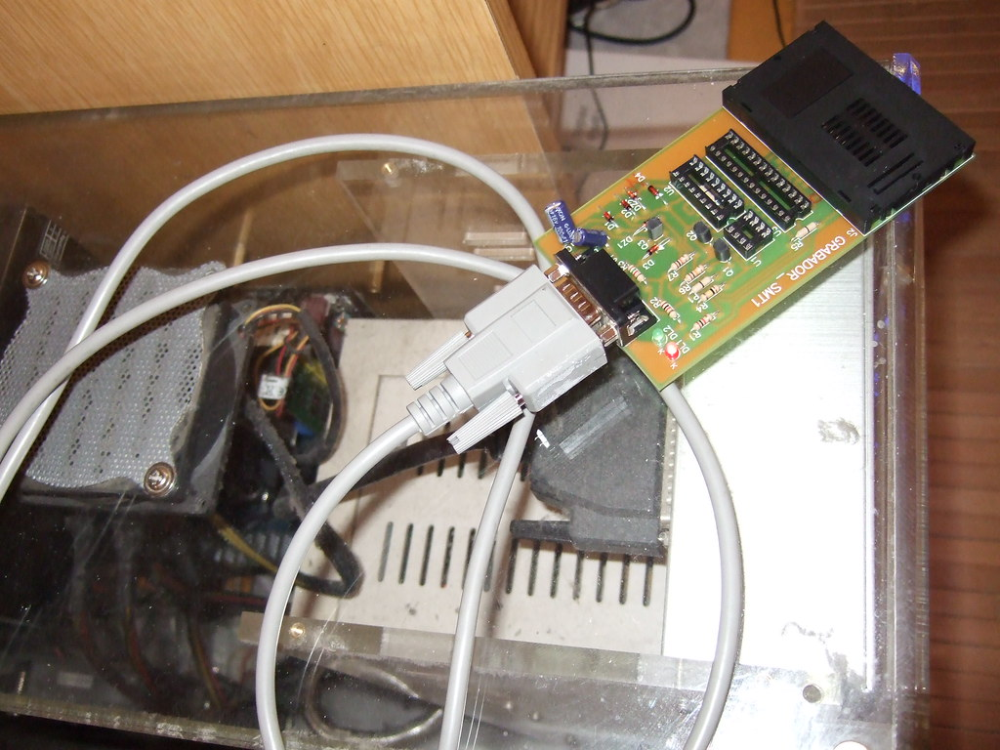

Domótica Casera sin Nube
Integracion
- La integración de dispositivos Zigbee mediante Zigbee2MQTT requiere modificar archivos de configuración de sistema, gestionar permisos en linux y flashear dongles USB. — fuente: domoticaencasa.es (2024-01-15).
Hardware
- Existen procedimientos documentados para realizar backups de memoria flash en microcontroladores ESP32 mediante esptool.py a 921600 baudios. — fuente: domoticaencasa.es (2024-02-10).
Red malla
- Los coordinadores USB Zigbee como CC2531 y CC2652 requieren flasheo de firmware para optimizar la cobertura de red malla. — fuente: domoticaencasa.es (2023-11-20).
Xiaomi
- Los dispositivos Xiaomi Aqara pueden conectarse a Home Assistant sin usar el gateway oficial mediante procedimientos de flasheo específicos. — fuente: domoticaencasa.es (2023-09-15).
Docker
- Home Assistant puede instalarse en NAS Synology mediante contenedores Docker, requiriendo configuración específica de permisos y volúmenes. — fuente: foro.domoticaencasa.es (2024-03-01).
Mapa zigbee
- Zigbee2MQTT permite visualizar el mapa topológico de la red Zigbee mediante paneles panel_iframe en Home Assistant. — fuente: domoticaencasa.es (2024-01-20).
Fuentes verificadas
- https://domoticaencasa.es/home-assistant-28-visualizar-mapa-de-zigbee-en-nuestro-panel/
- https://domoticaencasa.es/tutorial-ampliamos-la-cobertura-de-nuestro-cc2531/
- https://domoticaencasa.es/tutorial-instalar-zigbee2mqtt-hassio/
- https://domoticaencasa.es/tutorial-usar-dispositivos-xiaomi-aqara-sin-gateway/
- https://domoticaencasa.es/tutorial-xiaozhi-esp32-esphome/
- https://foro.domoticaencasa.es/viewtopic.php?t=908
Huecos declarados: volumen de búsqueda y competencia cuantitativa son UNVERIFIED (requieren Google Trends / Search Console).